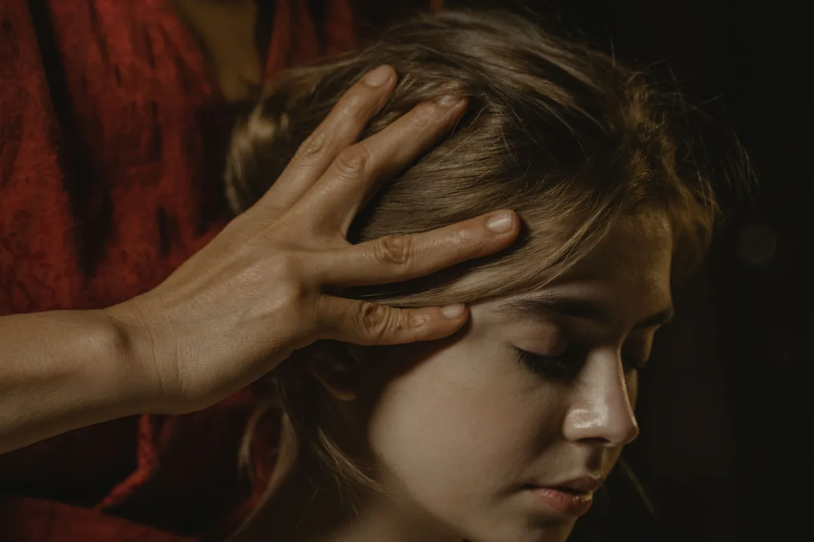

Réflexologie cranio-sacrée
Cette approche douce s'intéresse au rythme cranio-sacré, un mouvement subtil perceptible au niveau du crâne et du sacrum. Par un toucher léger, elle vise à soutenir la détente profonde du système nerveux et à libérer les tensions accumulées, notamment au niveau de la tête, du dos et du bassin.

Méthode Knap
Développée par le kinésiologue Bruno Knapp, cette méthode travaille sur des points réflexes spécifiques associés aux organes et aux glandes. Elle est souvent utilisée pour accompagner la gestion du stress et soutenir l'équilibre général de l'organisme.
Auriculothérapie
Issue des travaux du Dr Paul Nogier, l'auriculothérapie repose sur l'idée que le pavillon de l'oreille reflète l'ensemble du corps, à la manière d'un fœtus inversé. La stimulation de points précis de l'oreille (par simple pression) peut accompagner la détente, la gestion du stress ou de certaines douleurs.
Ces techniques réflexes sont utilisées en complément de la kinésiologie appliquée et des soins énergétiques et sonores, selon ce que révèle le test musculaire.